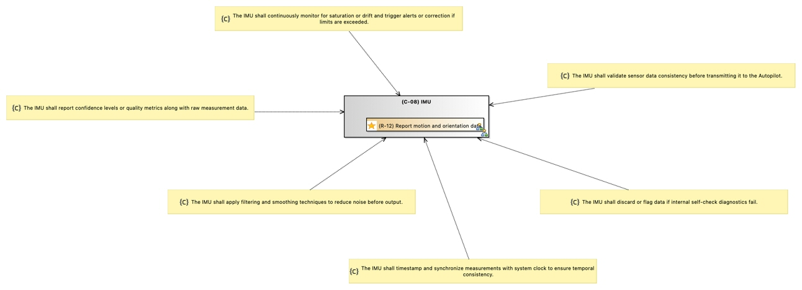

(C-08) IMU
ControlEntity
GCAP_NTP241_UNINA > GCAP_NTP241_UNINA > STPA Analysis > Control Structure > (C-08) IMUNo description.
Content
 The IMU shall validate sensor data consistency before transmitting it to the Autopilot.
The IMU shall validate sensor data consistency before transmitting it to the Autopilot.- The IMU shall discard or flag data if internal self-check diagnostics fail.
- The IMU shall timestamp and synchronize measurements with system clock to ensure temporal consistency.
- The IMU shall apply filtering and smoothing techniques to reduce noise before output.
- The IMU shall report confidence levels or quality metrics along with raw measurement data.
- The IMU shall continuously monitor for saturation or drift and trigger alerts or correction if limits are exceeded.
 (R-16) Report motion and orientation data.
(R-16) Report motion and orientation data. Feedback: (C-07) Physical Process -> (C-08) IMU
Feedback: (C-07) Physical Process -> (C-08) IMU
Capella Elements
Responsibilities
Incoming Relations
Outgoing Relations
Owned Constraints
| Name and Description | Owned specification | Constrained elements |
|
The IMU shall validate sensor data consistency before transmitting it to the Autopilot.
No description. |
LinkedText : |
|
|
The IMU shall discard or flag data if internal self-check diagnostics fail.
No description. |
LinkedText : |
|
|
The IMU shall timestamp and synchronize measurements with system clock to ensure temporal consistency.
No description. |
LinkedText : |
|
|
The IMU shall apply filtering and smoothing techniques to reduce noise before output.
No description. |
LinkedText : |
|
|
The IMU shall report confidence levels or quality metrics along with raw measurement data.
No description. |
LinkedText : |
|
|
The IMU shall continuously monitor for saturation or drift and trigger alerts or correction if limits are exceeded.
No description. |
LinkedText : |
Owned diagrams
DCD Detailed Controller Diagram of IMU

Diagrams displaying "(C-08) IMU"
- [CFD] Causal Factor Diagram of UCA-09: IMU fails to send motion/acceleration data to the Autopilot.
- [CFD] Causal Factor Diagram of UCA-10: IMU sends corrupted, biased, or uncalibrated data (e.g., due to sensor drift or malfunction).
- [CFD] Causal Factor Diagram of UCA-11: Autopilot misinterprets valid IMU data, applying wrong compensation or control decisions.
- [CFD] Causal Factor Diagram of UCA-12: IMU data is received too late to ensure timely correction of flight dynamics.
- [CTD] Contextual Traceability Diagram of Loss of Drone
- [DCD] Detailed Controller Diagram of IMU
- [HCS] Hierarchical Control Structure Diagram